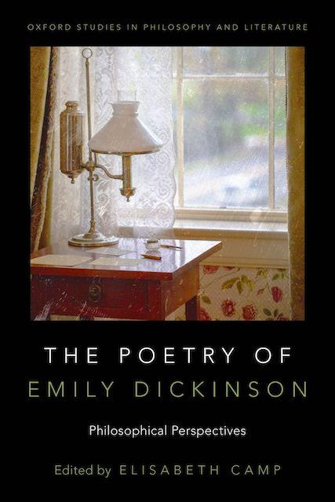
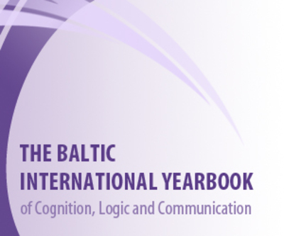

Aristotelian Society Supplementary Volume 99:1 (2025), 47–74.
Contemporary philosophical orthodoxy treats names as universally accessible, arbitrary tags that track referents across space, time and possibility. I argue that paradigmatic nicknames, like ‘Shrimpy’, ‘Crooked Hillary’ and ‘Bubblegum’, do track referents, but are marked by contrast with proper names by enforcing restrictions on who they can be used by and with, and when they can be used; and by framing their referents under affectively valenced social identities. While proper names can also carry social information, it is part of nicknames’ characteristic function to manage face, in ways that an adequate overall theory of meaning needs to explain.
Philosophical Quarterly 74:4 (2024), 1103–1136.
Identity labels like “woman”, “Black,” “mother,” and “evangelical” are pervasive in both political and personal life, and in both formal and informal classification and communication. They are also widely thought to undermine agency by essentializing groups, flattening individual distinctiveness, and enforcing discrimination. While we take these worries to be well-founded, we argue that they result from a particular practice of using labels to rigidly label others. We identify an alternative practice of playful self-labelling, and argue that it can function as a tool for combating oppression by expressing and enhancing individual and collective agency.
Royal Institute of Philosophy Supplement 95 (2024), 157-179.
I argue that stories are ‘equipment for living’ in two senses: retrospectively, they provide ‘configurational comprehension’ of a temporal sequence of events; prospectively, they offer templates for action. Narrative conceptions of the self appear well poised to leverage these functional roles for stories into an intuitively compelling view of self-construction as self-construal. However, the narrative conception defines selves in terms of the lives they live: a self is the protagonist in a lifelong story. And narrative structure is itself defined by ‘retrospective necessity’: the meaning of events within a story is given by their contribution to that story's ending. Together, this entails that life stories hold selves metaphysically, epistemically, and practically hostage to their ends. Fortunately, narratives are just one species of interpretive frame. I suggest some alternative types of frames, including identity labels and metaphors, that support configurational comprehension, action guidance, and self construction without shackling selves to their lives’ ends.
in The Virtue of Open-Mindedness and Perspective, ed. W. Riggs and N. Snow (OUP 2025), 19–57.
Perspectives are intuitive modes of interpretation: they guide how people attend to, explain, and respond to the world. They are ubiquitous in agents’ engagement with politics, science, art, and everyday life. But they are double-edged swords: the same open-ended, flexible, intuitive functionality that enables the fluid navigation of complex situations also blinds agents to interpretive inconsistencies and lures them into self-reinforcing apathy. Open-mindedness is the best antidote for such myopia and complacency, but it risks perverting one’s operative interpretive standards in ways that cannot be discerned from the inside. The best way to counter these risks is not to abjure perspectives, cling to a fixed standard, or morph passively among perspectives. Rather, agents should deploy logic, conversation, and other tools of reasoning to probe and improve their perspectival aptness.
in The Scientific Imagination, ed. P. Godfrey-Smith and A. Levy (OUP 2019), 304-336.
Perspectives are intuitive modes of interpretation: they guide how people attend to, explain, and respond to the world. They are ubiquitous in agents’ engagement with politics, science, art, and everyday life. But they are double-edged swords: the same open-ended, flexible, intuitive functionality that enables the fluid navigation of complex situations also blinds agents to interpretive inconsistencies and lures them into self-reinforcing apathy. Open-mindedness is the best antidote for such myopia and complacency, but it risks perverting one’s operative interpretive standards in ways that cannot be discerned from the inside. The best way to counter these risks is not to abjure perspectives, cling to a fixed standard, or morph passively among perspectives. Rather, agents should deploy logic, conversation, and other tools of reasoning to probe and improve their perspectival aptness.
in Varieties of Understanding: New Perspectives from Philosophy, Psychology, and Theology, ed. S. Grimm (OUP 2019), 17-45.
Our ordinary and theoretical talk are rife with “framing devices”: expressions that function, not just to communicate factual information, but to suggest an intuitive way of thinking about their subjects. Framing devices can also play an important role in individual cognition, as slogans, precepts, and models that guide inquiry, explanation, and memory. At the same time, however, framing devices are double-edged swords. Communicatively, they can mold our minds into a shared pattern, even when we would rather resist. Cognitively, the intuitive power of a frame can blind us both to known features that don’t fit easily within the frame, and also to “unknown unknowns” we have not yet encountered. Thus, perhaps Locke is right to disavow such “eloquent inventions” as “perfect cheats” that “insinuate wrong ideas, move the passions, and thereby mislead the judgment.” Against this, I argue that while the metaphor of double-edged swords is indeed apt, this is because frames are tools for thought. Like any tool, they can be used well or badly; but they do not fall outside the realm of rationality altogether. I describe how framing devices express open-ended perspectives, which produce structured intuitive characterizations of particular subjects. I argue that frames can make effective, distinctive epistemic contributions in the course of inquiry, and that the cognitive structures that frames produce can contribute to, and constitute, epistemic achievements in their own right, even in highly idealized circumstances at the nominal end of inquiry. Throughout, I focus especially on scientific understanding, because it serves as a paradigm case of rational inquiry, from which frames and perspectives are most likely to be excluded.
Philosophical Perspectives: Philosophy of Mind 31:1, ed. J. Hawthorne (2017) 31:1, 73-102.
Recent philosophical attention to fiction has focused on imaginative resistance, especially with respect to moral matters, and has concluded that moral attitudes are distinctively hard to shift, even in imagination. However, we also need to explain ‘disparate response’: readers’ ability and willingness to alter their emotional, moral and other evaluative responses from those they would have to the same situation in real life. I argue that a unified explanation of both imaginative resistance and disparate response needs to appeal to perspectives. Trying on a perspective involves more than imagining an experience or the truth of a set of propositions: it requires actually structuring one’s intuitive thinking in the relevant way. A perspectival account better comports with empirical evidence of malleability in readers’ responses to both fiction and non-fiction, and more accurately predicts when imaginative resistance and accommodation actually arise.
Nonsite.org vol. 3, (2011), 34 pp.
Humans are inveterate storytellers. We make incessant and insistent narrative sense of the world around us and of our place in it, so much so that some scholars have suggested "homo narrans" as a more appropriate identifying description for our species than "homo sapiens". Indeed, a long-standing tradition holds that our very self-identities have an essentially narrative shape: that who each of us is is determined by the stories of our lives, and that in some sense we create ourselves by crafting those stories. In this essay, I focus on an especially compelling case of narrative self-construction: Wordsworth's Prelude. I argue that we do need rich, substantive selves of the sort delivered by narratives like The Prelude, both in order to evaluate our past actions and to guide future ones. However, the very feature which makes Wordsworth's poem so rhetorically powerful as an autobiographyhis invocation of a robust teleological structure, which is imposed on him from infancy by Nature also prevents us from embracing it as a model for our own self-understanding, because it conflicts sharply with modern views about ontology. Contemporary advocates of a narrative conception of the self, such as Jerome Bruner, Alasdair MacIntyre, and Marya Schectman, drop The Prelude's objectionable ontological assumptions. But rather than placing the narrative conception of self on a firm metaphysical foundation, this actually intensifies the threat of fictionalism: the risk that the selves we fashion through stories are mere self-deluding illusions. I conclude by gesturing toward the characters within stories as an alternative literary model that avoids many of these problems.
Midwest Studies in Philosophy: Poetry and Philosophy 33:1 (2009), 107-130.
I contrast the imaginative activity involved in pretending something to be true with that involved in metaphorical construal, arguing that the two activities differ in their direction of fit, mechanism of interpretation, and phenomenology. More generally, pretense involves the imaginative manipulation of what we take to be so, while metaphor reconfigures how we think about what is so. I show that fiction and poetry both make use of both interpretive activities; in particular, both can provide us with "metaphors for life" by inviting us to use an imagined scenario as a frame through which to interpret our own lives. Finally, there may be an appropriate role for both species of imagination within philosophy itself.
The Baltic International Yearbook of Cognition, Logic and Communication (2008), 1-24.
Theorists often associate certain "poetic" qualities with metaphor, most especially, producing an open-ended, holistic perspective which is evocative, imagistic, and affectively-laden. I argue that, on the one hand, non-cognitivist's are wrong to claim that metaphors only produce such perspectives: like ordinary literal speech, they also serve to undertake claims and other speech acts with propositional content. On the other hand, contextualists are wrong to assimilate metaphor to literal loose talk: metaphors depend on using one thing as a perspective for thinking about something else. I bring out the distinctive way that metaphor works by contrasting it with two other poetic uses of language, juxtapositions and "telling details," that do fit the accounts of metaphor offered by non-cognitivist's and contextualists, respectively.
Philosophical Studies 129:1 (2006), 1-25.
Contrary to what many proponents of metaphor have claimed, metaphors don't do anything different in kind from what can be done with literal speech. But this does not render metaphor theoretically dispensable or irrelevant, as many analytic philosophers have assumed. In certain circumstances, I argue, metaphors can enable speakers to communicate contents that cannot be stated in fully literal and explicit terms. These cases thus serve as counterexamples to John Searle's 'Principle of Expressibility', the idea that whatever can be meant can be said. Indeed, metaphors can sometimes provide us with our only cognitive access to certain properties. Thinking about metaphor is useful because it draws our attention to patterns and processes of thought that play a pervasive role in our ordinary thought and talk, and that extend our basic communicative and cognitive resources.
in The Oxford Handbook of Contemporary Philosophy of Language, ed. E. Lepore and U. Stojnic (OUP 2025), 676-712.
People speak in different ways within and across contexts; and utterances that are equivalent in their essential content and force can differ in their social significance in virtue of differing phonologically, morphologically, syntactically, and lexically. These dimensions of linguistic variation have not received sustained philosophical attention. We argue that meaningful form contributes significantly to the speech acts that agents perform with their utterances. Speakers communicate social information by navigating fine-grained differences in how they speak, and hearers systematically pick up on and use this information. Moreover, these fine-grained differences performatively alter the conversational context. We review three options for handling these aspects of speech within the philosophy of language—exclusionism, informationalism, and performativism—and sketch prospects and challenges for a theory of sociolinguistic variation going forward.
in From Lying to Perjury: Linguistic and Legal Perspectives on Lies and Other Falsehoods, ed. L. Horn (Mouton 2022), 227-258.
Mobsters and others engaged in risky forms of social coordination and coercion often communicate by saying something that is overtly innocuous but transmits another message ‘off record’. In both ordinary conversation and political discourse, insinuation and other forms of indirection, like joking, offer significant protection from liability. However, they do not confer blanket immunity: speakers can be held to account for an ‘off record’ message, if the only reasonable interpretations of their utterance involve a commitment to it. Legal liability for speech in the service of criminal behavior displays a similar profile of significant protection from indirection along with potential liability for reasonable interpretations. Specifically, in both ordinary and legal contexts, liability depends on how a reasonable speaker would expect a reasonable hearer to interpret their utterance in the context of utterance, rather than on the actual speaker’s claimed communicative intentions.
in New Work on Speech Acts, ed. D. Harris, D. Fogal and M. Moss (OUP 2018), 40-66.
Most philosophical and linguistic theorizing about meaning focuses on cooperative forms of communication. However, much verbal communication involves parties whose interests are not fully aligned, or who do not know their degree of alignment. In such contexts, speakers sometimes turn to insinuation: implicatures that permit deniability about risky attitudes and contents. I argue that insinuation is a form of speaker's meaning in which speakers communicate potentially risky attitudes and contents without adding them to the conversational record, or sometimes even to the common ground.
in Bad Words: Philosophical Perspectives on Slurs, ed. D. Sosa (OUP 2018), 29-59.
Slurs are incendiary terms so much that many ordinary speakers and theorists deny that sentences containing them can ever be true, and utterances where they occur embedded within normally "quarantining" contexts, like conditionals and indirect reports, are still typically offensive. At the same time, however, many speakers and theorists also find it obvious that sentences containing slurs can be true; and there are clear cases where embedding does inoculate a speaker from the slur's offensiveness. I argue that four standard accounts of the "other" element that differentiates slurs from their more neutral counterparts semantic content, perlocutionary effect, presupposition, and conventional implicature all fail to account for this puzzling mixture of intuitions about truth, and for this mixture of projection and quarantining. Instead, I propose that slurs make two distinct, coordinated contributions to a sentence's conventional communicative role: predication of group membership and endorsement of a derogating perspective on the group. Predication of group membership is "at issue" by default, but different semantic and conversational contexts can alter the relative prominence and scope of the two contributions.
Philosophical Studies 174:1 (2017), 47-64.
Metaphors are powerful communicative tools because they produce "framing effects". These effects are especially palpable when the metaphor is an insult that denigrates the hearer or someone he cares about. In such cases, just comprehending the metaphor produces a kind of "complicity" that cannot easily be undone by denying the speaker's claim. Several theorists have taken this to show that metaphors are engaged in a different line of work from ordinary communication. Against this, I argue that metaphorical insults are rhetorically powerful because they combine perspectives, presupposition, and pragmatics in the service of speech acts with assertoric force.
Inquiry 59:1 (2016), 113-138.
Davidson advocates a radical and powerful form of anti-conventionalism, on which the scope of a semantic theory is restricted to the most local of contexts: a particular utterance by a particular speaker. I argue that this hyper-localism undercuts the explanatory grounds for his assumption that semantic meaning is systematic, which is central, among other things, to his holism. More importantly, it threatens to undercut the distinction between word meaning and speaker's meaning, which he takes to be essential to semantics. I argue that a moderate form of conventionalism can restore systematicity and the word/speaker distinction while accommodating Davidson's insights about the complexities and contextual variability of language use.
in A Companion to Donald Davidson, ed. E. Lepore and K. Ludwig (Wiley-Blackwell 2013), 361-378.
In discussions of metaphor, Davidson is (in)famous for claiming that metaphorical utterances lack any distinctive, nonliteral meaning. But there is much less agreement about just what he means by this. I explicate this claim as it occurs in What Metaphors Mean (1978) and relate it to his reflections on language in 'A Nice Derangement of Epitaphs' (1986). First, I argue that despite some puzzling inconsistencies, the overall thrust of "What Metaphors Mean" is a radical form of noncogitivism. Second, I argue that in "Nice Derangement," Davidson applies several of the arguments offered against metaphorical meanings in "What Metaphors Mean" to linguistic meaning more generally; but his criteria for what counts as "meaning" have shifted to include context-local word meaning alongside Gricean speaker's meaning. With respect to metaphor, he appears to have abandoned his previous noncognitivism for an analysis in terms of speaker's meaning, but it is not clear that this new view is justified by his new model of meaning. Finally, I articulate and evaluate a neo-Davidsonian view of metaphor, which retains as much as possible from both papers.
Analytic Philosophy 54:3 (2013), 330-349.
Slurs are rhetorically insidious and theoretically interesting because they communicate something above and beyond the truth-conditional predication of group membership, something which typically though not always projects across 'blocking' constructions like negation, conditionals, and indirect quotation, and which is exceptionally resistant to direct challenge. I argue that neither pure expressivism nor straightforward truth-conditionalism can account for the sort of commitment that speakers undertake by using slurs. Instead, I claim, users of slurs endorse a denigrating perspective on the targeted group.
Nous 46:4 (2012), 587-634.
Traditional theories of sarcasm treat it as a case of speakers meaning the opposite of what they say. Recently, expressivists have argued that sarcasm is not a type of speaker meaning at all, but merely the expression of a dissociative attitude toward an evoked thought or perspective. I argue that we should analyze sarcasm in terms of meaning inversion, as the traditional theory does; but that we need to construe meaning more broadly, to include illocutionary force and evaluative attitudes. I distinguish four subclasses of sarcasm, individuated in terms of the target of inversion. Three of these classes raise serious challenges for a standard implicature analysis.
Philosophical Perspectives: Philosophy of Language, 22:1, ed. J. Hawthorne (2008), 1-21.
In American English (and also in e.g. German, Russian, and French), one can indicate sarcasm by prefixing a sentence with 'Like' or 'As if', as in "Like/As if she's going to believe you." We argue that 'Like'-prefixed sarcasm displays a distinctive pattern of semantic and syntactic constraints which are not shared with bare sarcasm; most notably, 'Like'-prefixed sarcasm licenses Negative Polarity Items, such as 'ever', 'yet', and 'lift a finger'. We sketch two possible semantic theories of sarcastic 'Like', and conclude that the most promising option is to treat 'Like' as semantically expressing an illocutionary force of denial.
Context-Sensitivity and Semantic Minimalism, ed. G. Preyer and G. Peter (OUP 2007), 194-213.
Ernie Lepore and Herman Cappelen (2005) argue that contextual influences on semantic content are much more restricted than most theorists assume, by presenting three tests for semantic context-sensitivity and concluding that only a very restricted class of expressions pass them. They combine this extreme semantic minimalism with an even more extreme speech-act pluralism, according to which a speaker has said anything that she can be reported as having said. I argue that because Lepore and Cappelen refuse to distinguish what is said from what is claimed, their tests wrongly classify metaphor as semantically context-sensitive. I then argue that our ordinary linguistic practices support a distinction between what is said and what is claimed, and that underwrites a much more moderate form of speech act pluralism.
Mind & Language 21:3 (2006), 280:309.
On a familiar and prima facie plausible view of metaphor, speakers who speak metaphorically say one thing in order to mean another. Several theorists have recently challenged this view; they offer criteria to distinguish what is said from what is merely meant, and argue that these criteria support classifying metaphor within 'what is said'. I consider four such criteria, and argue that when properly understood, they support the traditional classification instead. I conclude by sketching how we might extract a workable notion of "what is said" from ordinary intuitions about saying.
in Language and Reality From a Naturalistic Perspective: Themes From Michael Devitt, ed. A. Bianchi (Springer 2020), 45-66.
Philosophers have long debated the relative priority of thought and language, both at the deepest level, in asking what makes us distinctively human, and more superficially, in explaining why we find it so natural to communicate with words. The “linguistic turn” in analytic philosophy accorded pride of place to language in the order of investigation, but only because it treated language as a window onto thought, which it took to be fundamental in the order of explanation. The Chomskian linguistic program tips the balance further toward language, by construing the language faculty as an independent, distinctively human biological mechanism. Devitt (Ignorance of Language 2006) attempts to swing the pendulum back toward the other extreme, by proposing that thought itself is fundamentally sentential, and that there is little or nothing for language to do beyond reflecting the structure and content of thought. I argue that both thought and language involve a greater diversity of function and form than either the Chomskian model or Devitt’s antithesis acknowledge. Both thought and language are better seen as complex, mutually supporting suites of interacting abilities.
in Non-Propositional Intentionality, ed. A. Grzankowski and M. Montague (OUP 2018), 19-45.
A number of philosophers and logicians have argued for the conclusion that maps are logically tractable modes of representation by analyzing them in propositional terms. But in doing so, they have often left what they mean by "propositional" undefined or unjustified. I argue that propositions are characterized by a structure that is digital, universal, asymmetrical, and recursive. There is little positive evidence that maps exhibit these features. Instead, we can better explain their functional structure by taking seriously the observation that maps arrange their constituent elements in a non-hierarchical, holistic structure. This is compatible with the more basic claim advanced by defenders of a propositional analysis: that (many) maps do have formal semantics and logic.
in The Routledge Handbook of Philosophy of Animal Minds, ed. J. Beck and K. Andrews (Routledge 2017), 100-108.
Instrumental reasoning is not just practically but also theoretically important. An agent capable of instrumental reason represents a state of affairs which they simultaneously realize does not actually obtain and have no inherent interest in obtaining, because they take its actualization to contribute to achieving a state they do desire. This makes it intuitive to treat instrumental reasoning as involving the sorts of abstract relations that are easy to encode linguistically, for instance with sentential modal operators, but that are more challenging for other, more expressively restricted formats. We offer an analysis of the cognitive capacities required for instrumental reasoning, review empirical evidence that some non-human animals possess at least some of each of these capacities, and suggest non-linguistic mechanisms by which they might be implemented.
in The Conceptual Mind: New Directions in the Study of Concepts, ed. E. Margolis & S. Laurence (MIT 2015), 591-621.
Recent theorizing about concepts has been dominated by two general models: crudely speaking, a philosophical one on which concepts are rule-governed atoms, and a psychological one on which they are associative networks. The debate between these two models is often framed in terms of competing answers to the question of "how the mind works" or "the nature of thought". I argue that this is a false dichotomy, because thought operates in both these ways. Human thought utilizes representational structures that function as arbitrary re-combinable bits. This supports a version of the Language of Thought Hypothesis though a significantly more modest one than is typically advanced by advocates of that view. But human thought also employs representational structures that are contextually malleable, intuitive, and holistic; I call these "characterizations". "Dual systems" models of cognition recognize this multiplicity of mental processes, but typically posit largely separate structures, and emphasize conflicts between them. By contrast, I argue that the two forms of representation are more closely integrated, and more symbiotic, than talk of duality suggests.
Philosophy and Phenomenological Research 78:2 (2009), 275-311.
I argue that we can reconcile two seemingly incompatible traditions for thinking about conceptual thought. On the one hand, many cognitive scientists maintain that the systematic deployment of representational capacities is sufficient for conceptual thought; on the other hand, a long philosophical tradition claims that language is necessary for conceptual thought. I argue that it is necessary and sufficient for conceptual thought that one be able to entertain many of the thoughts produced by recombining one's representational capacities apart from a direct confrontation with the states of affairs being represented.
in Philosophy of Animal Minds, ed. R. Lurz (Cambridge UP 2009), 108-127.
In Baboon Metaphysics (2007), Dorothy Cheney and Robert Seyfarth argue that baboons think in a language-like representational medium, which is propositional, discrete-valued, rule-governed, open-ended, and hierarchically structured. Their evidence for this conclusion derives largely from the fact that baboons appear to represent a complex social structure, in which a female's dominance ranking depends both on her birth order within her family and on her family's rank order within the overall troop. I argue that a diagrammatic representational medium for social thought, with the structure of a branching tree but with the branches having a dedicated semantic function, better captures the distinctive abilities and limitations of baboon cognition.
Philosophical Perspectives, 21:1 Philosophy of Mind, ed. J. Hawthorne (2007), 145-182.
Various philosophers have argued that thought must be language-like. I argue that thought can take other forms as well. Specifically, if a thinker's representational needs were sufficiently simple, it might think entirely with maps. The distinction between sentential and cartographic representational systems is not trivial: differences in their combinatorial principles produce substantive differences in how they represent and subserve reasoning. These differences in turn suggest predictions about distinct patterns of cognitive ability and breakdown.
Philosophical Quarterly 54:215 (2004), 209-231.
We should not admit categorial restrictions on the significance of syntactically well-formed strings. Syntactically well-formed but semantically absurd strings, such as 'Life's but a walking shadow' and 'Caesar is a prime number', can express thoughts; and competent thinkers both are able to grasp these thoughts and should to be able to grasp them. Gareth Evans' Generality Constraint should be viewed as a fully general constraint on concept possession and propositional thought, even though Evans himself restricted it. This is because (a) even well-formed but semantically cross-categorial strings typically do possess substantive inferential roles; (b) hearers exploit these inferential roles in interpreting such strings metaphorically; (c) there is no good reason to deny truth-conditions to strings that have inferential roles.
Mind (December 2024)
The Politics of Language is a significant advance in the nascent theory of social meaning. It departs from orthodox theories of meaning in prioritizing audience uptake over speaker production and the alignment of emotional affect and social identity over the rational exchange of information. However, in their zeal to offer a radical, ‘non-ideal’ alternative to orthodox philosophy of language, Beaver and Stanley the orthodoxy’s genuine insights about aspects of communication that stem from our treating each other as rational agents, and aspects of language that stem from its role as a system for building complex structures out of discrete parts. Together, these produce a distorted description of the role that literal meaning plays in communal negotiations about communicative responsibility, in turn limiting their ability to diagnose and combat the malign speech practices they are most concerned to elucidate.
Journal of Ethics and Social Philosophy 23:3
In “Games and the Art of Agency,” Thi Nguyen argues that games highlight and foster a profound complexity in human motivation, of “purposeful and managed agential disunity.” I agree that human agency is “fluid and fleeting,” but argue that Nguyen’s analysis relies on a traditional conception of selves as stable, goal-driven agents, which his discussion rightly throws into question. Without this conception, games look more like life, and both look riskier, than we might otherwise hope.
Studies in History and Philosophy of Science 92 (2022), 264-266.
Nick Shea’s Representation in Cognitive Science (OUP 2018) places a broadly teleosemantic account of mental representation on a realist footing by stressing the need to explain how a representational system tracks information, with different formats exploiting structural correspondences between vehicles and contents in different ways. I explore how realism interacts with format ecumenicalism, and more specifically how different representational systems distribute the representational burden at systemic and local levels. Varieties of systematicity and structure matter functionally, by affecting systems’ representational capacities and vulnerabilities. And they matter theoretically, by affecting where and how we posit and test for representational mechanisms.
in Philosophy for Girls: An Invitation to the Life of Thought, ed. M. Shew and K. Garchar (OUP 2020), 167-180.
We do many things with words. We describe, we plan and promise, we invite and command, we hint and intimate. We also use words to wound–to demean, insult, and exclude. The fact that words can have such potent, pernicious effects is puzzling, because they are, after all, just words. As the schoolyard chant goes, “Sticks and stones may break my bones, but words can never hurt me.” Words do hurt though–not only our feelings, but our social status, even our basic dignity as human beings. How can sounds and shapes do all that? Many philosophers have thought of language as a kind of game. Both games and language are complex, abstract structures that we deploy strategically to achieve serious goals, as well as for fun. Thinking through some of these similarities can illuminate how something so intangible can have such powerful effects, and seeing how people wield that power for malicious ends can reveal how to turn the tables and fight back.
in The Routledge Handbook of Metaethics, ed. T. McPherson and D. Plunkett (Routledge 2017), 87-101.
I consider what it might mean for an utterance to "express" an attitude in a way that differentiates expressive from descriptive speech, and how individual words might have the conventional function of performing such acts of expression. Drawing on recent work in formal semantics, I argue that while there are promising models for implementing the intuition that certain expressions and constructions, for instance, deontic and epistemic modals, pejoratives like "damn", and slurs, express non-cognitive states and/or have dynamic non-truth-conditional effects, these models are not easily extended to the classic case of "thin" ethical terms.
Philosophical Studies 174:6 (2017), 1617–1627.
Stalnaker's Context deploys the core machinery of common ground, possible worlds, and epistemic accessibility to mount a powerful case for the "autonomy of pragmatics": the utility of theorizing about discourse function independently of specific linguistic mechanisms. Illocutionary force lies at the periphery between pragmatics as the rational, non-conventional dynamics of context change and semantics as a conventional compositional mechanism for determining truth-conditional contents' in an interesting way. I argue that the conventionalization of illocutionary force, most notably in assertion, has cross contextual consequences that are not fully captured by a specification of dynamic effects on common ground. More generally, I suggest that Stalnaker's purely informational, propositional analysis of both semantic content and dynamic effects distorts our understanding of the function of language, especially of the real-world commitments and consequences engendered by robustly "expressive" language like slurs, honorifics, and thick terms.
Mind 125:498 (2016), 611-615.
Category mistakes--sentences like Julius Caesar is a prime number, Colourless green ideas sleep furiously, or Saturday is in bed--are theoretically interesting precisely because they are marginal: as by-products of our linguistic and conceptual systems lacking any obvious function, they reveal the limits of, and interactions among, those systems. Do syntactic or semantic restrictions block is green from taking "Two" as a subject? Does the compositional machinery proceed smoothly, but fail to generate a coherent proposition or delimit a coherent possibility? Or is the proposition it produces simply one that our paltry minds cannot grasp, or that fails to arouse our interest? One's answers to these questions depend on, and constrain, one's conceptions of syntax, semantics, and pragmatics, of language and thought, and of the relations among them and between them and the world.
in The Routledge Companion to Philosophy of Literature, ed. N. Carroll and J. Gibson (Routledge 2015), 334-346.
What is distinctive about literary metaphors? Why do authors use metaphors in literature? I argue that metaphors in literature, like metaphors elsewhere, allow authors to communicate thoughts and stake claims about how the world is. To make this claim plausible, we need, first, to free ourselves of an overly restrictive conception of ordinary discourse, which can be open-ended, nuanced, and imagistically and emotionally evocative, just like literary metaphors; and in particular which can also present contents through perspectives. Second, we need to recognize the interpretive differences that are generated by the literary context: because literary texts are published works of art, literary meaning is constructed as a collaboration between a 'model author' and a 'model reader', each of whom has access to both more and fewer interpretive assumptions than the actual writer and recipient do. Third, we need to attend to the diversity among literary metaphors, which can be laser-focused as well as open-ended, abstract as well as concretely imagistic and emotional, and which can stake truth-evaluable claims while also presenting non-propositional perspectives. Finally, metaphors differ from other perspectival tropes, like exemplification, in presenting one thing through the lens or filter of something else, producing a kind of twofoldness that gives metaphors a distinctive rhetorical and cognitive power.
The Pragmatics Encyclopedia, ed. L. Cummings (Routledge 2009), 264-266.
A survey of recent work on metaphor in cognitive science, linguistics, and pragmatic theory, with special attention to challenges to the "standard" Gricean model of metaphor as implicature.
in Handbook of Philosophy of Language, ed. E. Lepore & B. Smith (OUP 2006), 845-863.
A survey of four influential theories of metaphor in the philosophy of language simile theories (e.g. Fogelin), interaction theories (e.g. Black), Gricean theories (e.g. Searle), and noncognitivist theories (e.g. Davidson) in terms of their answers to four central questions: What are metaphors? What is metaphorical meaning? How do metaphors work? And what is the nature of metaphorical truth?
Philosophy Compass 1:2 (2006), 154-170.
The most sustained and innovative recent work on metaphor has occurred in cognitive science and psychology. Psycholinguistic investigation suggests that novel, poetic metaphors are processed differently than literal speech, while relatively conventionalized and contextually salient metaphors are processed more like literal speech. This conflicts with the view of "cognitive linguists" like George Lakoff that all or nearly all thought is essentially metaphorical. There are currently four main cognitive models of metaphor comprehension: juxtaposition, category-transfer, feature-matching, and structural alignment. Structural alignment deals best with the widest range of examples; but it still fails to account for the complexity and richness of fairly novel, poetic metaphors.
Nous 39:4 (2005), 715-731.
A critical discussion of Stern's 2000 book postulating a metaphoricity operator 'Mthat' modeled on Kaplan's 'Dthat'. I focus on Stern's claim that we need to adopt a semantic analysis of metaphor because metaphor exhibits interpretive constraints which cannot be explained on a pragmatic view; I argue that in each case the 'constraint' is merely defeasible, and that a pragmatic analysis can accommodate the data more parsimoniously and in greater generality than Stern's theory can.
 |
|
 |
|